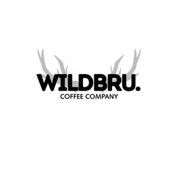

Trade Mark Journal No.2026/010 6 March 2026
UK00004342315 18 February 2026 (30,35,43)

- Class 30
- Roasted coffee beans; Ground coffee beans; Coffee beans; Unroasted coffee beans; Coffee; Ground coffee; Coffee (Unroasted -); Unroasted coffee; Decaffeinated coffee; Sugar-coated coffee beans; Chocolate bark containing ground coffee beans; Mixtures of malt coffee with coffee; Iced coffee; Coffee substitutes [artificial coffee or vegetable preparations for use as coffee]; Chocolate coffee; Coffee pods; Malt coffee; Flavoured coffee; Coffee in whole-bean form; Coffee extracts for use as substitutes for coffee; Coffee [roasted, powdered, granulated, or in drinks]; Freeze-dried coffee; Mixtures of malt coffee extracts with coffee; Coffee essences for use as substitutes for coffee; Caffeine-free coffee; Roasted barley and malt for use as substitute for coffee; Coffee beverages; Coffee bags; Mixtures of coffee and chicory; Coffee flavorings; Coffee drinks; Roasted barley tea; Chicory [coffee substitute]; Aerated drinks [with coffee, cocoa or chocolate base]; Chicory for use as substitutes for coffee; Mixtures of malt coffee with cocoa; Aerated beverages [with coffee, cocoa or chocolate base]; Beverages with coffee base; Beverages with a coffee base; Drip bag coffee; Coffee beverages with milk; Coffee oils; Roasted brown rice tea; Powdered coffee in drip bags; Coffee in brewed form; Coffee flavourings; Coffee in ground form; Coffee capsules; Instant coffee; Mixtures of coffee; Coffee mixtures; Espresso; Barley for use as a coffee substitute; Mixtures of coffee and malt; Coffee, teas and cocoa and substitutes therefor; Roasted barley tea [mugicha]; Coffee extracts; Ice beverages with a coffee base; Malt coffee extracts; Coffee substitutes; Mixtures of coffee essences and coffee extracts; Substitutes (Coffee -); Beverages made from coffee; Beverages made of coffee; Coffee based beverages; Coffee based drinks; Coffee substitutes [grain or chicory based]; Coffee essences; Chicory based coffee substitute; Prepared coffee and coffee-based beverages; Coffee concentrates; Preparations of chicory for use as a substitute for coffee; Chicory mixtures for use as substitutes for coffee; Mixtures of chicory for use as coffee substitutes; Mixtures of chicory for use as substitutes for coffee; Chicory extracts for use as substitutes for coffee; Vanilla beans; Cocoa [roasted, powdered, granulated, or in drinks]; Chicory and chicory mixtures, all for use as substitutes for coffee; Coffee essence; Prepared coffee beverages; Mugi-cha [roasted barley tea]; Chicory mixtures, all for use as substitutes for coffee.
- Class 35
- Retail services in relation to coffee.
- Class 43
- Coffee shops.
Shaun Peter Francis